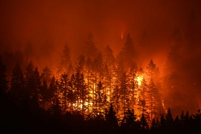

I’m Jonathan Burbaum, and this is Healing Earth with Technology: a weekly, Science-based, subscriber-supported serial. In this serial, I offer a peek behind the headlines of science, focusing (at least in the beginning) on climate change/global warming/decarbonization. I welcome comments, contributions, and discussions, particularly those that follow Deming’s caveat, “In God we trust. All others, bring data.” The subliminal objective is to open the scientific process to a broader audience so that readers can discover their own truth, not based on innuendo or ad hominem attributions but instead based on hard data and critical thought.
You can read Healing for free, and you can reach me directly by replying to this email. If someone forwarded you this email, they’re asking you to sign up. You can do that by clicking here.
Today’s read: 9 minutes.
I thought I’d start a bit differently today, with a contemporary quote related to the release of the Sixth Assessment Report (AR6) of the Intergovernmental Panel on Climate Change (IPCC) Working Group I (WGI) analysis of “The Physical Science Basis” of the climate system and climate change. Yes, it’s every bit of the massive self-sustaining bureaucracy that the three acronyms imply. The report is a massive 3,949 pages (for calibration, that’s more than 10% of the entire Encyclopedia Brittanica), and there are, by my count, 782 contributors from 82 countries to just this volume (and this is just one of three “working groups”). So, no, I haven’t read and digested the whole thing. But some apparently have, and they are more than willing to summarize it for us. Here’s one bullet-point summary from “a climate scientist” for the Environmental Defense Fund:

“A new climate report is out and it is the most dire yet.
Below are my top five takeaways from this latest report.
Many changes to our planet are accelerating, unprecedented and irreversible
Human influence [sic] on the climate system are the main driver of changes
We may cross the 1.5C threshold earlier than expected
Every increment of warming matters and we can’t rule out potentially catastrophic events
We know what we need to do and the earlier we act the better”
I’ve eliminated the explanatory text, but you can read the linked blog post yourself if you’re so inclined. Bullets 1-4 are pretty well accepted, but they only raise the dilemma of climate models that I covered in the earliest issues. There’s nothing earth-shattering here.
The one I have a real problem with is #5. The author goes on to claim (under #5):
“Given that every increment of warming matters, it is never too late to act. However, the earlier we act, the better off we will be, and the more devastating consequences we will avoid. [see note #1 below] And we know exactly what needs to be done. {see note #2]
We need to stabilize our climate in the long run, which will require net-zero carbon dioxide emissions at a minimum. [see note #3] Scientists continue to improve estimates of how much carbon dioxide we can emit to limit warming to desired temperature levels, which can guide policies. [see note #4]
Methods to remove carbon dioxide from the atmosphere are promising for balancing out any residual CO2 emissions [see note #5], but side effects must be considered, such as impacts to water and food security. [see note #6]”
Immediately following this “call to action” is a button that requests donations, under the heading “Time to Take Action”.
It’s disgusting.
Here are my push-backs:
If the blog takeaway #4 is true (“we can’t rule out potentially catastrophic events”), then, at some point, it does become too late to act. It’s not like we can turn back the clock whenever we all conclude that there’s a problem! If we allow it to happen, true climate change will be a phase change, like melting an ice cube or the evaporation of a puddle. Going back to the way it was will no longer be an option.
We do not know exactly what needs to be done, not even close, and even if we did, we lack the global political will and machinery to do it.
Solving the problem through emissions reductions alone is asking too much of humans. Instead, we need to get to “gross” zero, not to “net” zero (with purchased offsets that allow the wealthy to make up for inconvenient emissions). This means taking a step unprecedented in human history: Completely abandoning multiple energy sources worldwide.
By attempting to use increasingly precise models to influence policies, scientists are solving the wrong problem, and they’re out of their swim lane. More precise estimates of disaster won’t preclude disaster.
We have nothing other than “promising” methods for carbon dioxide removal. However, implementing them as designed will have global costs that create a host of Economics problems, from The Tragedy of the Commons to the Free-rider problem, that are difficult to handle even in stable, local markets.
At the enormous scale of global energy, “side effects” of food security and water are unavoidable. Solutions must somehow balance adverse consequences against the primary consequences of global warming. Waiting for a “better” solution free from side effects is a disastrous strategy.
And finally: Donating cash to EDF or any other organization seeking to promote political action to “save the planet” only perpetuates the problem. Think about it in today’s partisan context. Political action on either side of the spectrum manufactures controversy where there should be none because that’s what motivates the “pay now” button. [Note: If you’ve got extra cash that you’d like to put to good use, I accept donations. They are used to promote this rag so that others can find it in the noise that passes for news these days.]
The story continues…
Let’s reiterate what the problem is. Stated concisely:
The increase in carbon dioxide levels in the atmosphere, attributable to human extraction and combustion of geologic carbon over 350 years of industrialization, threatens to destabilize Earth’s climates.
Summarizing what we’ve learned so far (see index):
To solve this problem, we must somehow control the Earth’s atmosphere. Specifically, we need to adjust the amount of carbon dioxide it contains if we expect to regulate the planet’s temperature. Regardless of how you slice it, adjusting Earth’s “thermostat” will require “geoengineering”, in other words, an intentional process of applying human ingenuity (backed by Science). We cannot solve the problem piecemeal, and the most popular approach, decarbonization, is about as effective as a rain dance. Based on the models' projections, the threat is imminent, so we must rely on the technologies we have already, rather than waiting for a clever new invention.
This thread (“Earth is getting warmer. So what?”) has been generally about the consequences of global warming and hence about what current models of climate predict. So I thought I’d take a look at the AR6 IPCC WGI (blech!) report to see how it’s going. Let’s analyze one paragraph and translate it into terms most intelligent people can understand:
“The combined effect of all climate feedback processes is to amplify the climate response to forcing (virtually certain)1. While major advances in the understanding of cloud processes have increased the level of confidence and decreased the uncertainty range for the cloud feedback by about 50% compared to AR5, clouds remain the largest contribution to overall uncertainty in climate feedbacks (high confidence)2. Uncertainties in the ECS3 and other climate sensitivity metrics, such as the transient climate response (TCR) and the transient climate response to cumulative CO2 emissions (TCRE), are the dominant source of uncertainty in global temperature projections over the 21st century under moderate to high GHG emissions scenarios. CMIP64 models have higher mean values and wider spreads in ECS and TCR than the assessed best estimates and very likely ranges within this Report, leading the models to project a range of future warming that is wider than the assessed future warming range.” Report page 102.
The first sentence issues a stark warning. While the increase in temperature attributed to rising CO2 (“forcing”) is pretty small, all models predict that the Earth’s atmospheric and ocean systems amplify (rather than dampen) the effect of the small temperature change caused by human emissions. The rest of the paragraph is about how “feedback processes” affect the precision of the models. Clearly, this is the key function of models, so let’s look more into “feedback”. Three major mechanisms are accounted for in models:
Water vapor is the most significant feedback mechanism. When it gets warmer, the amount of water vapor in the atmosphere increases. Water vapor, like CO2, is a greenhouse gas, so it produces additional warming over and above that of the CO2 itself. However, increased water vapor also affects the lapse rate, the rate at which air temperature decreases with altitude. In the tropics, which dominate the models, the air temperature decreases more slowly with altitude with more water vapor, attenuating the temperature rise at the surface.
Clouds can both raise and lower the surface temperature. This is because clouds reflect solar radiation during the day, but they also hold in heat at night.
Albedo refers to the reflection of sunlight by the surface. This feedback mechanism is associated with melting ice and snow; Ice reflects sunlight, but land absorbs it. So, as the polar ice caps melt and winters get warmer, the planet gets warmer than it would otherwise.
So, we can compare models is to look at how well they’re predicting these feedback mechanisms. The report contains the necessary data:

It says that the models still suck (that’s 8 years of hardcore modeling to produce the observed “improvements”), and the projections are still very uncertain, but despite that, they’re all still forecasting a bad outcome. Just like they did in 2013. If they’re improving, it’s in a very narrow way (That’s a 50% improvement in the uncertainty of the feedback component related to clouds. Do you see it?). So to me, the last sentence in the quote is pretty clear: The Report (and therefore the authors of the Report) consciously chose a conservative interpretation of the models instead of anything particularly well thought out. And if they’re clueless, we’re all clueless.
Bottom line: The models still foresee a terrifying future for Earth. The scientists argue about how scared we should be and when. But, as a group, they have decided to “keep calm and carry on.”
The question for you, dear reader, is: “Do you think that of these models, with all of their flaws, could all be misdirected, and Earth will stabilize in some unpredictable way?” Personally, I don’t, but you’re welcome to believe whatever you want.
To translate these annotations into numbers, the document guides: “The following terms have been used to indicate the assessed likelihood of an outcome or a result: virtually certain 99–100% probability, very likely 90–100%, likely 66–100%, about as likely as not 33–66%, unlikely 0–33%, very unlikely 0–10%, exceptionally unlikely 0–1%. Additional terms (extremely likely 95–100%, more likely than not >50–100%, and extremely unlikely 0–5%) may also be used when appropriate.”
‘A level of confidence is expressed using five qualifiers: very low, low, medium, high and very high, and typeset in italics.”
Equilibrium Climate Sensitivity. The equilibrium (steady-state) change in the surface temperature following a doubling of the atmospheric carbon dioxide (CO2) concentration from pre-industrial conditions. [560 ppm CO2]
Climate Model Intercomparison Project 6.